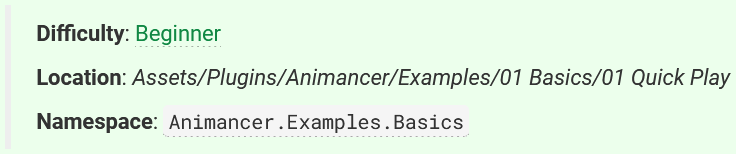
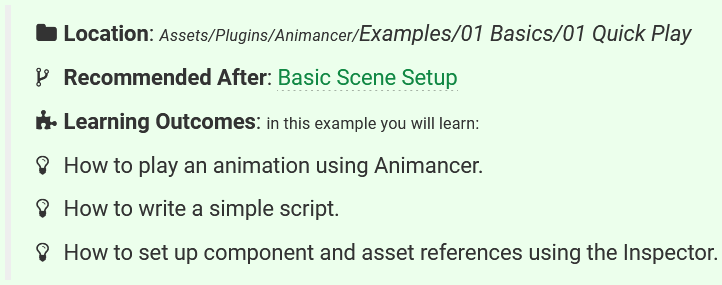

Released 2022-07-03
See the Animancer v7.0 Upgrade Guide if you're upgrading from a version older than that.
Features
- Made
StateMachine<TState>and its children[Serializable].- The Serialized Fields pattern is now the recommended way of setting up a state machine in most situations.
- Added
ICopyable<T>to standardize types with aCopyFrommethod.- Added
AnimancerUtilities.Cloneas an extension method. - Implemented that interface in all Transition Types. #195
- Added
- Added
AnimancerTransitionAssetBase.UnSharedwhich is an UnShared class that can have any type of Transition Asset assigned to it (instead of only a specific type). - Improved the Pack Textures window:
- It will now re-pack
Spritesthat were already packed into textures so that wasted space in the original textures doesn't affect the new packing. - Fixed several bugs with specific input asset configurations.
- It will now re-pack
- Added the ability to specify an environment prefab in the Transition Preview Window via its Settings tab. #199
Examples
All Examples
- Improved the information blocks at the start of each example:
- Removed Difficulty because calling them "Beginner" or "Intermediate" wasn't a very useful distinction.
- Removed Namespace because that isn't important information and the example scripts don't have detailed comments so linking to the namespace's API page wasn't useful either.
- Recommended After is now a key point (previously is was included on the same line as Difficulty).
- Added Learning Outcomes to outline what you are expected to learn from that example so that if you feel you haven't learned something by the end you can re-read it or ask for Help.
| Old | New |
|---|---|
|  |  |
- Added code architecture diagrams to all examples.
- Added support for the new Input System Package in the examples (as well as the legacy Input Manager).
- Added a Humanoid-PistolShoot animation and a Pistol model for various examples.
- Cleaned up the Humanoid-Walk, Humanoid-Run, and Spider Bot animations a bit.
- Removed the GolfPutt and Tennis animations and models.
- Cleaned up all example UI canvases.
- All example objects now have materials so they can get properly updated by SRP (because apparently the default material can't).
- Fixed example scene lighting to use a Spot Light instead of Directional because it's attached to the camera and having a continually moving Directional Light was causing warnings in Unity 2022.
Specific Examples
- Basics completely remade everything:
- Quick Play now only covers the scene setup and plays a single animation on startup.
- Basic Movement swaps between Idle and Move animations based on whether a key is being held.
- Basic Action performs an Action when the user clicks the mouse and then returns to Idle.
- Transitions implements the same logic as Basic Action but with Fading between animations.
- Basic Character combines Basic Movement and Transitions to explain some of the issues that arise when you start implementing more complex behaviours.
Playing and Fadinghas been removed since its important points are now covered by Transitions.- Moved
Named Animationsto the Fine Control group since it isn't necessary to understand how to use Animancer and isn't a recommended workflow.
- Fine Control:
- Renamed
Spider BottoSpeed and Time.- It no longer involves inheritance since it was confusing for beginners.
- Instead, it uses a
[SerializeReference]for its Move animation so that the Polymorphic Drawer system can allow the Directional Mixers to reuse the same script with a 2D Mixer.
- Greatly simplified the
OnValidatemethod in Doors.
- Renamed
- Directional Sprites:
- Renamed
Basic Movementto Directional Basics. - Renamed
Character Controllerto Directional Character.
- Renamed
- Events:
- Changed
FootstepEventsto besealedand haveFootstepEventsAnimationreference it with a field instead of inheriting because it was confusing to beginners. - Simplified Golf Events to only contain one character demonstrating hybrid Animancer Events instead of also re-explaining the regular ways of using each system that were already explained in Footstep Events.
- Changed
- State Machines completely remade everything:
- Removed
Game Manager. It was supposed to be a short introduction to demonstrate how Animancer's FSM could be used for a non-animation situation, but it ended up being way too long by explaining all the other irrelevant details like enums, switches, camera movement, text formatting, etc. so now Characters does the job much better anyway. - Removed
Brain Transplantsbecause it spent far too long explaining things that weren't directly relevant to Animancer or even how to use the FSM system. - Renamed
Interrupt Managementto Interruptions. - Completely replaced Characters to re-implement the same behaviour as Basic Character using Animancer's Finite State Machine.
- Changed Brains, Interruptions, and Weapons to directly reuse the same scripts from Characters instead of having their own slightly different copies. This just means the Characters scripts have some parts which aren't explained until later example.
- Included an example scene for Weapons. It isn't very good since the example animations are limited, but it works as a proof of concept while the documentation shows what it could look like with a proper character and animations.
- Removed
- Layers completely remade everything:
- Split the old example into two which are based on the behaviour of Basic Character instead of using UI buttons.
- Basic Layers for playing and masking.
- Dynamic Layers for playing the Action on the whole body if the character would be Idle or just the upper body while they Walk.
- Animator Controllers:
- Replaced
Hybrid Mini Gamewith Hybrid Character which re-implements the character from Brains to include an Animator Controller avoids wasting so much time explaining irrelevant behaviour. - Cleaned up 3D Game Kit and changed it to use a Serialized State Machine.
- Replaced
Improvements
- The Layer header is no longer shown in the
AnimancerComponentInspector when there's only one and has all default values. This can be disabled as a Display Option. - Added
OptionalWarning.LockedEvents.- Added
AnimancerEvent.Sequence.ShouldNotModifyReasonandSetShouldNotModifyReason. - When a Transition is played it calls
SetShouldNotModifyReasonto explain that modifying the events on a state played from a Transition is a common source of bugs. - When an
AnimancerEvent.Sequenceis modified, if itsShouldNotModifyReasonhas been set, it logsOptionalWarning.LockedEvents(with the reason included in the warning message). - The
AnimancerEvent.Sequence.endEventfield is no longerpublic, but now has anEndEventproperty. - Changed the other properties relating to End Events to not use
refreturns because they now need to properly detect when their value is set (forOptionalWarning.LockedEvents).
- Added
- Added
AnimancerComponentInspector warnings if there are multiple animation systems trying to control the same object:- Multiple
AnimancerComponents on the same object targeting the sameAnimator. - A Legacy
Animationcomponent on the same object as the targetAnimator.
- Multiple
- Added an
AnimancerComponentInspector warning when a state is playing atWeight == 0withAnimancerPlayable.KeepPlayablesConnectedset tofalse. - Added
AnimancerLayer.WeightlessThresholdas a small leeway value forGetOrCreateWeightlessState. - Added
PlayableAssetState.AppendDetailsto describe itsBindings. - Added
ClipTransition.Length. - Added
ClipTransitionSequence.AddEventfor adding events relative to the entire sequence. #183 - Added
AnimancerEvent.Sequence.AddAllEventsfor turning Animation Events from anAnimationClipinto Animancer Events. #198 - Added
AnimancerTransitionAssetBase.UnShared.ClearCachedEvents. - Added support for
NO_RUNTIME_PLAYER_PREFSConditional Compilation Symbol to remove all usage ofPlayerPrefsfrom Runtime Builds because it is not allowed on some platforms. - Added assertions to ensure that
MixerStateandControllerStateparameters are notNaNorInfinity. - Added
AnimancerUtilities.GetUnsupportedMessageandCreateUnsupportedArgumentException. - Added
AnimancerTransitionAssetBaseas the base class ofAnimancerTransitionAsset<T>. - Added assertions to Transition Assets to give more useful errors if you try to use them when their transition isn't assigned.
- Added an
Open Animancer Toolsbutton to theAnimationClipInspector. - Added overloads of
EndEventReceiver.GetFadeOutDurationwhich take anAnimancerState. - Added
AnimancerState.DelayedPause. #207 - Added non-generic
IStateMachineinterface. - Added keyed
StateMachine<TKey, TState>.WithDefault.
Changes
- Un-
sealedlots of classes. - Replaced
ControllerState.KeepStateOnStopwithActionsOnStopto give individual control over each layer.ActionOnStop.Continuecan be used for sync layers so it doesn't try to control them (because Unity gives a warning for that but doesn't give Animancer any way to detect which layers are synced at runtime).- Removed
ControllerState.NormalizedStartTimesince it overlaps with the newActionsOnStopand only worked on Layer 0 anyway.
- Replaced the exception for reaching the maximum state depth in
AnimancerLayer.GetOrCreateWeightlessStatewithOptionalWarning.MaxStateDepthsince it is only a recommendation anyway. - Changed the default
NormalizedStartTimeofClipTransitionandPlayableAssetTransitiontoNaNinstead of0so they won't useFadeMode.FromStartby default and will share the same default behaviour as playing anAnimationClip. - Changed the default value of
SoloAnimation.ApplyInEditModetofalseto avoid modifying scene objects unexpectedly. - Changed
AnimancerPlayable.StateDictionary.CreateandGetOrCreateto not connect the states to layer 0. If you want to do that, you can useanimancerComponent.Layers[0].CreateStateinstead. - Changed
AnimancerPlayable.StateDictionary.ReferenceKeysOnlyinto anEqualityComparerso you could potentially assign a custom comparer rather than only the two included in Animancer. - Removed the code that disables object selection in the Transition Preview Window.
- Cleaned up
PlayableAssetState.InitializeBindings. - Refactored
AnimancerToolsWinow:- Moved it into the
Animancer.Editor.Toolsnamespace. - Moved the panels out of it so they are no longer nested classes.
- It now uses reflection to gather the tools rather than hard coding them as individual fields so new tools can be added without modifying the window.
- Moved it into the
- Removed the exception for adding a new layer beyond the
AnimancerPlayable.LayerList.Capacity. It now just doubles the capacity like a regular list. - Removed the standard Animation Event names systems (
SimpleEventReceiverandEndEventReceiver).SimpleEventReceiverwas inefficient due to requiring anAnimationEventparameter (which allocates garbage every time an event is triggered) to backtrack and try to figure out which animation the event actually came from to avoid triggering the callback in response to an event from the wrong state.EndEventReceiverwas unreliable because it relied on registering your callback as an End Event but didn't actually prevent Animancer from checking and triggering that End Event like it normally would, meaning you might as well just use an End Event.- Those scripts were originally created before Animancer Events were implemented and have been removed because they don't facilitate an effective workflow for any common use case.
- If you still want to use those scripts, they're available on request (simply use any of the contact methods listed on the Help page).
ExitEventis still included because it serves a notably different purpose (though its use is generally not encouraged).
Fixes
- Fixed
AnimancerPlayableto not give compile warnings in Unity 2022.1. #208 - Fixed
InvalidCastExceptioninControllerState.ValidateHasParameter,AnimancerPlayableDrawer.DoNativeAnimatorControllerGUI, andControllerTransition.Drawer.DoChildPropertyGUIwhen using an Animator Controller loaded from an Asset Bundle. - Fixed potential
InvalidCastExceptioninSpriteEditor. - Fixed
AnimancerPlayable.TryGetOutputto actually work. - Fixed Animancer Events on looping animations to be triggered properly when calling
AnimancerComponent.Playrepeatedly. - Fixed potential
NullReferenceExceptioninAnimationGatherer. - Fixed the
TransitionPreviewWindowto not disable scripts withrunInEditMode,ExecuteAlways, orExecuteInEditMode.- This prevents it from breaking
SpriteSkincomponents from the 2D Animation package.
- This prevents it from breaking
- Fixed
TransitionPreviewWindow.OpenOrCloseto not give warnings about camera rotation in 2D Mode in Unity 2021.2. - Fixed incorrect Binding Type Mismatch error in
PlayableAssetState. #171 - Fixed
PlayableAssetStateto properly bind anINotificationReceiverto aSignalTrack. - Fixed "PlayableGraph was not destroyed" warning in
AnimationClipEditorif you exit Play Mode with anAnimationClipasset showing in the Inspector. - Fixed
AnimancerState.EventDispatcher.GetLoopDeltato work correctly when thenextTimeis exactly on theeventTime. #205 - Fixed
AnimancerState.HasEventsto not get a sequence from theObjectPoolif it has anEventDispatcherwithout a sequence when accessing theAnimancerState.Events. - Fixed
ControllerState.RawTimeto allow the time to be set while it is paused. #207 - Fixed
AnimationBindingsto not clear its cache every time the hierarchy is changed. - Fixed
EndEventReceiver.TryInvokeOnEndEventto not complain about a missing receiver if it found one that has no events. - Fixed possible
ArgumentExceptioninAnimancerEvent.Sequence.Insert. - Fixed the "playing at 0 weight" Inspector warning to not appear when the state is fading.
- Fixed
SerializableEventSequenceDrawerheight to only take up one line when showing the "Multi-object editing message". - Fixed mixer transitions to not allow their Animations to be edited when multiple objects are selected with different values. Previously, one of the objects would immediately overwrite the others.
- Fixed
ClipTransitionSequence.IsLoopingto not cause infinite recursion when there is only one clip. - Fixed the base
UnShared.Assetproperty setter to clear the cachedStateandEvents. - Fixed "Identifier uniqueness violation" issues in the Modify Sprites and Rename Sprites tools by adding support for the 2D Sprite package.
- Fixed the fade duration to be calculated correctly for a layer if its state is already mid-fade.
- Fixed several incorrect values in
[DefaultValue]attributes (0instead of0f).